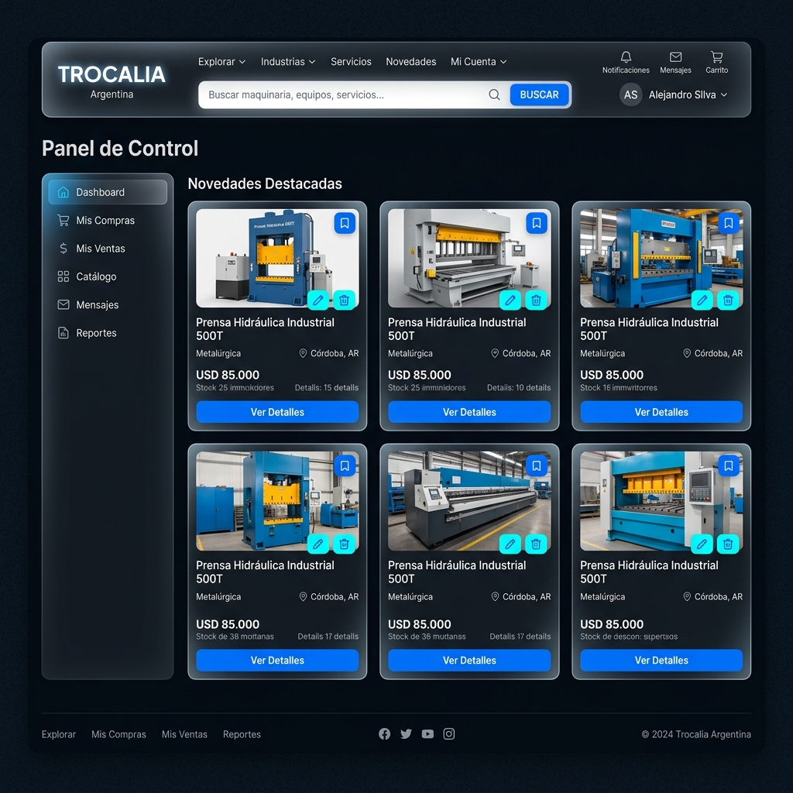

Hoja de Ruta de Implementación
Algoritmo: Autocorrección de Pasos
1. Leer especificación
2. Escribir código
3. Escribir tests unitarios
4. Ejecutar tests
SI pasan → Tests integración
SI fallan → Corregir (max 5 iteraciones)
Flujo de Checkout (Pagos)
1. POST /checkout (idempotency key)
2. Crear preferencia MercadoPago
3. Guardar Compra (pending)
4. Redirigir a Pasarela
5. Recibir Webhook (Validar HMAC)
6. ¿Aprobado? → Acreditar Tokens
Identidad Visual Trocalia (C2C)
Diseño centrado en la confianza del usuario final. Estética limpia, ágil y profesional para un marketplace de persona a persona.
- Tipografía Display: Plus Jakarta Sans
- Tipografía Body: Lato
- Fondo Página: #EFEFEF
- Tarjetas y Nav: #FFFFFF
- Footer: #222222
- Texto: #333333

⚡
Backend
- Node.js 20 LTS
- NestJS 10
- Drizzle ORM
- BullMQ (Redis)
💎
Frontend
- Next.js 14
- TailwindCSS
- shadcn/ui
- TanStack Query
🗄️
Database
- PostgreSQL 16
- PostGIS
- Redis 7
- Elasticsearch 8
🤖
AI & Services
- DeepSeek (Chat)
- Qwen-VL (Vision)
- MercadoPago
- Cloudflare R2
🔐 KYC Level 2
Validación obligatoria de DNI y teléfono para vendedores. Cifrado AES-256 para PII.
🛡️ Wallet Guard
No se permite balance negativo. Transacciones atómicas con Drizzle transactions.
👁️ Log Sanitization
Interceptor automático para ocultar passwords, DNI y tokens en logs.
✅ Payment Signature
Validación obligatoria de HMAC en todos los webhooks de MercadoPago.
Claude Code Integration
Usa estos atajos para que Claude trabaje por ti siguiendo el SDD.
claude "implement paso [n] following SDD"
claude "fix tests for module [name] using SDD rules"